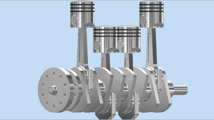

2-Stroke Engine CAD Model

Overview
A self-managed CAD project involving the complete modelling and assembly of a 2-stroke, 4-piston engine in Autodesk Inventor. The model was developed from a technical drawing challenge, requiring 2D engineering drawings to be interpreted and translated into a detailed 3D assembly.
Design & Modelling
Each component was modelled individually before being assembled to accurately represent the complete engine mechanism. The project involved creating complex and unique geometries while maintaining accurate dimensions and relationships between components.
- Modelled the individual engine components in Autodesk Inventor.
- Used dimensional constraints to accurately reproduce the technical drawings.
- Created and managed an assembly containing the complete engine.
- Applied mechanical design principles to ensure components aligned correctly.
- Translated 2D technical drawings into a functional 3D representation.
Outcome
The completed assembly provides a detailed 3D representation of the 2-stroke, 4-piston engine and its mechanical arrangement. The project developed practical skills in Autodesk Inventor, CAD modelling, interpreting engineering drawings, dimensional accuracy and mechanical assembly.